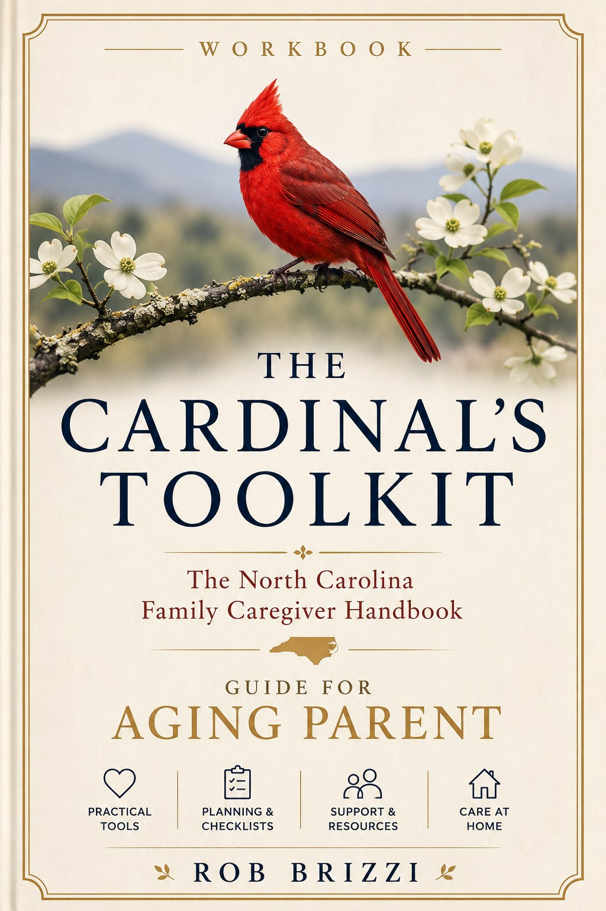

The Cardinal's Toolkit
Practical help for the hardest days.
Replace with your real book description. Prompts, checklists, and worksheets to help caregivers and grieving families take the next small step — without feeling alone in it.

What's inside
Summarize the Toolkit's structure here. The Toolkit is built to be opened on a hard day and used in five minutes — not read cover to cover.
Reflection prompts
Gentle questions to help you name what you're carrying.
Practical checklists
For appointments, paperwork, and the logistics no one warns you about.
Conversation scripts
Words for the talks that are hard to start — with doctors, family, and yourself.
Remembrance rituals
Small, meaningful ways to honor and remember.
How it pairs with the Promise
Where The Cardinal's Promise offers comfort and meaning, the Toolkit offers your next concrete step. Read the story for your heart; reach for the Toolkit for your hands.